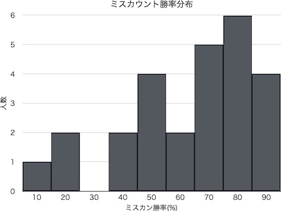

当サイトはBeatmaniaIIDXにおけるアリーナモードに準拠した順位を推定する簡易ツール並びにその関連情報をまとめたページです。
特にアリーナランクがA3の方に精度の高い推定を提供しています。
このツールを使うにあたって、事前に必要な準備があります。それは
アリーナモードの戦績をまとめること
です。
どのようにまとめるか、具体例から説明していきます。
対戦例
この画像はBeatmaniaIIDX公式サイトの"DJ DATA > ARENAモード"で見ることができる、対戦履歴の一例です。
ここで注目してほしいのは、
対戦の勝敗からCLASS STATUSゲージに寄与するpt(以下pt)がどれほど増減したか
ということです。
BEMANI Wiki
を参考に、Aさんは同じクラス相手で引き分けているので、得られるptは0です。Bさんは1つ下のクラス相手で勝っているので、得られるptは+40です。CPUは集計対象から外します。
他の対戦履歴も参照して、それぞれ算出したptを足し合わせ
ます。このとき自身のランクが異なるものを入り混ぜないようにしましょう。画像の場合だと自分がA3ではない対戦は除きます。
集計が終わったら、
pt増減の総和を集計対象の人数で割り
ます。この値がpt増減期待値(pt増減の平均値)です。pt増減の総和が-10で集計対象の人数が9人だとすると、-10÷9=-1.1111となります。
以上で準備が完了しました。集計した対戦における自分のランクとpt増減期待値を入力したのち、推定ボタンを押すと推定順位が表示されます。
せっかく算出した推定順位なので、ぜひ活用しましょう。順位推定の考案者がオススメする活用方法を以下に紹介します。
公式サイトの"RANKING段位認定 > アリーナクラス TOP RANKER RANKING"から、推定した順位を探します。その順位周辺のプレイヤーはスコア力が互角な可能性が高い方たちです。今回はその集団とクリア力を比較することで、スコア力とクリア力のバランスを分析してみましょう。
表示されているプレイヤーの情報を新しいタブ等で開いて、ミスカウント比較をします。難易度別の項目から、
SP LEVEL12のミスカン勝敗
が見つかります。この数値を控えておきましょう。
推定順位周辺の集団からこの勝敗を最低10組、できれば20組以上記録していきます。
このデータをまとめていきます。
最も単純なまとめ方は、勝利優勢の組と敗北優勢の組に分け、それらの組の数を数え上げ、勝利優勢の組が全体の組に対して何%を占めるのか計算することです。
例えば勝利優勢が21組、敗北優勢が8組あるときは、21÷(21+8)×100=72%となります。
こうして出てきた値から、自身のスコア力とクリア力のバランスを見ます。
どの値ならバランスが取れているのか皆さんの解釈にゆだねますが、筆者の意見としては、35%~65%であればバランスが取れていて、35%以下であればクリア力を、65%以上であればスコア力を鍛えたほうが良い、と考えています。
余力があれば、ヒストグラムから分析することをオススメします。手間の割に得られる結果が視覚的で分かりやすいです。
集計した各プレイヤーに対して、その勝敗からミスカン勝率を計算することができます。この勝率の値を度数分布表にまとめ、ヒストグラムを作成します。（まとめ方は割愛）
下にヒストグラムの例を示します。ミスカン勝率が5%以下のものと95%以上のものは省いています。このグラフの形状から、今後はスコアとクリアのどちらに力を入れるべきでしょうか。
解釈は人により様々で、筆者自身もスコア力強化・現状維持・クリア力強化の3パターンの方針が立ちました。データを見ながら自分の解釈で方針を立てられることが、このまとめ方の魅力なのではないでしょうか。

より精度の高い順位推定を求める方、カスタマイズがしたい方は以下よりzipファイルをダウンロードしてください。
またファイルの使い方や理論について説明するドキュメントを今後追加する予定です。
※ファイルを開くにはMicrosoftOfficeを利用できる環境が必要です。
リンク
当サイトはBeatmaniaIIDX公式および株式会社コナミデジタルエンタテインメントとは関係の無い個人製作の非公式サイトです。
当サイトの提供するツール・データを利用することで生じた損害に対して、当サイトの運営は責任を負いかねます。
分析方法考案・ツール制作・サイト運営:ソルスティス
Twitter